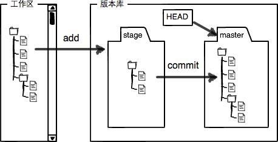

Git是什么？Git是目前世界上最先进的分布式版本控制系统（没有之一）。
2005年，Linus花了两周时间自己用C写了一个分布式版本控制系统，这就是Git！一个月之内，Linux系统的源码已经由Git管理了。Git迅速成为最流行的分布式版本控制系统，尤其是2008年，GitHub网站上线了，它为开源项目免费提供Git存储，无数开源项目开始迁移至GitHub，包括jQuery，PHP，Ruby等等。
Linus一直痛恨的CVS及SVN都是集中式的版本控制系统，而Git是分布式版本控制系统，集中式和分布式版本控制系统有什么区别呢？
先说集中式版本控制系统，版本库是集中存放在中央服务器的，而干活的时候，用的都是自己的电脑，所以要先从中央服务器取得最新的版本，然后开始干活，干完活了，再把自己的活推送给中央服务器。分布式版本控制系统根本没有“中央服务器”，每个人的电脑上都是一个完整的版本库，这样，你工作的时候，就不需要联网了，因为版本库就在你自己的电脑上。
首先，你可以试着输入git，看看系统有没有安装Git：
$ git
The program 'git' is currently not installed. You can install it by typing:
$ sudo apt-get install git像上面的命令，有很多Linux会友好地告诉你Git没有安装，还会告诉你如何安装Git。
如果你碰巧用Debian或Ubuntu Linux，通过一条sudo apt-get install git就可以直接完成Git的安装，非常简单。老一点的Debian或Ubuntu Linux，要把命令改为sudo apt-get install git-core，因为以前有个软件也叫GIT（GNU Interactive Tools），结果Git就只能叫git-core了。由于Git名气实在太大，后来就把GNU Interactive Tools改成gnuit，git-core正式改为git。如果是其他Linux版本，可以直接通过源码安装。先从Git官网下载源码，然后解压，依次输入：./config，make，sudo make install这几个命令安装就好了。
Mac做开发，有两种安装Git的方法:
一是安装homebrew，然后通过homebrew安装Git，具体方法请参考homebrew的文档：http://brew.sh/。
第二种方法更简单，也是推荐的方法，就是直接从AppStore安装Xcode，Xcode集成了Git，不过默认没有安装，你需要运行Xcode，选择菜单“Xcode”->“Preferences”，在弹出窗口中找到“Downloads”，选择“Command Line Tools”，点“Install”就可以完成安装了。
msysgit是Windows版的Git，从http://msysgit.github.io/ 下载，然后按默认选项安装即可。安装完成后，在开始菜单里找到“Git”->“Git Bash”，蹦出一个类似命令行窗口的东西，就说明Git安装成功！
$ git config --global user.name "Your Name"
$ git config --global user.email "email@example.com"
因为Git是分布式版本控制系统，所以，每个机器都必须自报家门：你的名字和Email地址。
注意:git config命令的–global参数，用了这个参数，表示你这台机器上所有的Git仓库都会使用这个配置，当然也可以对某个仓库指定不同的用户名和Email地址。
执行 git init 命令，在目录下生成一个.git 文件。
$ git init
第一步，通过 git add 命令把文件添加到仓库
$ git add file.txt
第二步，通过 git commit 命令把文本文件提交到仓库
$ git commit -m "wrote a text file"
其中 -m后是本次提交的说明
为什么Git添加文件需要 add，commit两步呢？其中原因之一为 commit 可以一次提交很多文件，所以可以多次 add 不同的文件，比如
$ git add file1.txt
$ git add file2.txt
$ git add file3.txt
$ git commit -m "add 3 files."
git init命令。git add filename，注意，可反复多次使用，添加多个文件；git commit –m “record.omfp，完成。第一步，git status 命令可以时刻掌控仓库状态，监控文件修改情况
$ git status
第二步，git diff 命令查看文件修改详情
$ git diff modified.txt
第三步，git add 命令添加文件到仓库
$ git add modified.txt
第四步，git status 命令查看待提交文件信息
$ git status
第五步，git commit -m ”” 命令提交文件
$ git commit -m "modify file modified.txt"
第六步，git status 命令查看仓库的当前状态
$ git status
Git会告诉我们当前没有需要提交的修改，工作目录是干净的。
git status命令。git diff可以查看修改内容。第一步，git log 命令查看历史信息
$ git log
commit 3618dh8724779dfdj8e8797
author: xxx <xxx#email.com>
Date: xxxx
note.information
git log 命令显示从最近到最远的的提交日志。如果觉得输出信息过多，可以添加 –pretty=oneline 参数简化信息
$ git log --pretty=oneline
618dh8724779dfdj8e8797 note.information
其中长字符串“618dh8724779dfdj8e8797”是十六进制的 commit id.
文件版本简介
在Git中，用HEAD表示当前版本，也就是最新提交的”618dh8…..dfdj8e8797”，上一版本就是HEAD^，上上一个版本是HEAD^^，………往上100个版本是HEAD~100
第二步，git reset 命令回退到指定版本
$ git reset --hard HEAD^
$ cat file.txt #查看文件内容
$ git log #回退版本以后的历史记录不见了
原来的最新版本已经消失了，好比从21世纪穿越到19世纪，就会回不来了。其实还是可以穿越回来的，就是找到相应版本的commit id，就可以指定回到未来的某个版本
$ git reset --hard xxxxxxx #commit id/版本号没有必要写全，前几位就可以了
如果无法找到commit id，可用 git reflog 命令查看命令历史记录
$ git reflog
xxxxx HEAD@(0): reset: move to HEAD^
xxxxx HEAD@(1):commit: note.information ##这样就可以找到未来版本号了
…………
git reset --hard commit_id。git log可以查看提交历史，以便确定要回退到哪个版本。git reflog查看命令历史，以便确定要回到未来的哪个版本。Git和其他版本控制系统如SVN的一个不同之处就是有暂存区的概念。工作区（Working Directory）：就是你在电脑里能看到的目录，比如我的learngit文件夹就是一个工作区；而版本库（Repository）则是工作区一个隐藏目录“.git”。
Git的版本库里存了很多东西，其中最重要的就是称为stage（或者叫index）的暂存区，还有Git为我们自动创建的第一个分支master，以及指向master的一个指针叫HEAD。
把文件往Git版本库里添加的时候，是分两步执行的：
第一步是用“git add”把文件添加进去，实际上就是把文件修改添加到暂存区；
第二步是用“git commit”提交更改，实际上就是把暂存区的所有内容提交到当前分支。
因为我们创建Git版本库时，Git自动为我们创建了唯一一个master分支，所以，现在，commit就是往master分支上提交更改。

Git跟踪并管理的是修改，而非文件。
Git管理的是修改，当你用git add命令后，在工作区的第一次修改被放入暂存区，准备提交，但是，在工作区的第二次修改并没有放入暂存区，所以，git commit只负责把暂存区的修改提交了，也就是第一次的修改被提交了，第二次的修改不会被提交。
提交后，用git diff HEAD -- file命令可以查看工作区和版本库里面最新版本的区别。
git checkout -- file 可以丢弃工作区的修改，把文件在工作区的修改全部撤销，这里有两种情况：
总之，就是让这个文件回到最近一次git commit或git add时的状态。
命令中的“–”很重要，没有“–”，就变成了“创建一个新分支”的命令。
用命令git reset HEAD file可以把暂存区的修改撤销掉（unstage），重新放回工作区。git reset命令既可以回退版本，也可以把暂存区的修改回退到工作区。当我们用HEAD时，表示最新的版本。
直接在文件管理器中把没用的文件删了，或者用rm命令删了之后，有两个选择：
1. 一是确实要从版本库中删除该文件，那就用命令git rm删掉，并且commit；
2. 另一种情况是删错了，因为版本库里还有，所以可以把误删的文件恢复到最新版本：$ git checkout -- file,git checkout其实是用版本库里的版本替换工作区的版本，无论工作区是修改还是删除，都可以“一键还原”。
命令git rm用于删除一个文件。如果一个文件已经被提交到版本库，那么你永远不用担心误删，但是要小心，你只能恢复文件到最新版本，你会丢失最近一次提交后你修改的内容。
注册GitHub账号后，由于本地Git仓库和GitHub仓库之间的传输是通过SSH加密的，所以，需要一些初始设置：
第1步：创建SSH Key。在用户主目录下，如没有.ssh目录，打开Shell（Windows下打开Git Bash），创建SSH Key：
$ ssh-keygen -t rsa -C youremail@example.com
如果一切顺利的话，可以在用户主目录里找到.ssh目录，里面有id_rsa和id_rsa.pub两个文件，这两个就是SSH Key的秘钥对，id_rsa是私钥，不能泄露出去，id_rsa.pub是公钥，可以放心地告诉任何人。
GitHub允许你添加多个Key，只要把每台电脑的Key都添加到GitHub，就可以在每台电脑上往GitHub推送了。
最后友情提示，在GitHub上免费托管的Git仓库，任何人都可以看到喔（但只有你自己才能改）。所以，不要把敏感信息放进去。
在本地创建了一个Git仓库后，又想在GitHub创建一个Git仓库，并且让这两个仓库进行远程同步，这样，GitHub上的仓库既可以作为备份，又可以让其他人通过该仓库来协作，真是一举多得。
第一步，登陆GitHub，然后在右上角找到”Creat a new repo”按钮，创建新的仓库。在Repository name填入与本地仓库同名，最后按照默认设置完成创建。
第二步，根据GitHub提示在本地仓库下运行命令git remote add origin
$ git remote add origin git@github.com:username/repo.name.git #推荐（速度快）
或者运行
$ git remote add origin https://github.com/username/repo.name.git
实际上，Git支持多种协议，默认的git://使用ssh，但也可以使用https等其他协议。使用https除了速度慢以外，还有个最大的麻烦是每次推送都必须输入口令，但是在某些只开放http端口的公司内部就无法使用ssh协议而只能用https。
如果出现以下出错信息
fatal: remote origin already exists.
此时需要运行命令 git remote rm origin 后再重新运行上步关联命令。
$ git remote rm origin
第三步，将本地库中的所有内容推送到远程库上，命令为 git push -u origin master
$ git push -u origin master
用git push命令实际上是把当前分支master推送到远程。由于远程库是空的，我们第一次推送master分支时，加上了-u参数，Git不但会把本地的master分支内容推送的远程新的master分支，还会把本地的master分支和远程的master分支关联起来，在以后的推送或者拉取时就可以简化命令为
git push origin master或git push.定义远程服务器别名origin：
$ git remote add origin git@github.com:xxx/github-test.git.本地和远程实行合并，本地默认为master:$ git push origin master;而当通过Github以xxx对github-test作出修改时，由于本地快照与Github远程服务器上的不一致，会引起以下错误：
```
! [rejected] master -> master (fetch first)
error: failed to push some refs to 'git@github.com:xxx/puppet'
hint: Updates were rejected because the remote contains work that you do
hint: not have locally. This is usually caused by another repository pushing
hint: to the same ref. You may want to first integrate the remote changes
hint: (e.g., 'git pull ...') before pushing again.
hint: See the 'Note about fast-forwards' in 'git push --help' for details.
```
此时可①通过pull子命令更新Github项目中作出的更改：
$ git pull origin master,之后再执行$ git push origin master;②可用git push -f进行强制上传覆盖。
可用命令git clone git@github.com:username/repo.name.git将一个远程库克隆到本地。
要克隆一个仓库，首先必须知道仓库的地址，然后使用git clone命令克隆。
Git支持多种协议，包括https，但通过ssh支持的原生git协议速度最快。
目前，git仅有一条时间线，这个分支是主分支，即master分支。HEAD严格来说不是指向提交，而是指向master，master才是指向提交的，所以，HEAD指向的就是当前分支。
首先，我们创建dev分支，然后切换到dev分支：
$ git checkout -b dev
Switched to a new branch 'dev'
git checkout命令加上-b参数表示创建并切换，相当于以下两条命令：
$ git branch dev
$ git checkout dev
Switched to branch 'dev'然后，用git branch命令查看当前分支：
$ git branch
* dev
mastergit branch命令会列出所有分支，当前分支前面会标一个*号。
待dev分支的工作完成(修改-add-commit)，我们就可以切换回master分支：
$ git checkout master
Switched to branch 'master'还要把dev分支的工作成果合并到master分支上：$ git merge dev。其实，git merge命令合并指定分支到当前分支。
合并完成后，就可以放心地删除dev分支了：
$ git branch -d dev
Deleted branch dev (was fec145a).删除后，查看branch，就只剩下master分支了。因为创建、合并和删除分支非常快，所以Git鼓励你使用分支完成某个任务，合并后再删掉分支，这和直接在master分支上工作效果是一样的，但过程更安全。
Git鼓励大量使用分支： + 查看分支：git branch + 创建分支：git branch name + 切换分支：git checkout name + 创建+切换分支：git checkout -b name + 合并某分支到当前分支：git merge name + 删除分支：git branch -d name
当两个合并的分支中文件都具有新的修改时会无法进行“快速合并”，只能试图把各自的修改合并起来，但这种合并就可能会有冲突。直接查看readme.txt的内容时，Git用<<<<<<<，=======，>>>>>>>标记出不同分支的内容，我们修改后保存，再提交即可。
用带参数的git log也可以看到分支的合并情况：
$ git log --graph --pretty=oneline --abbrev-commit.
git log --graph命令可以看到分支合并图。通常，合并分支时，如果可能，Git会用“Fast forward”模式，但这种模式下，删除分支后，会丢掉分支信息。如果要强制禁用“Fast forward”模式，Git就会在merge时生成一个新的commit，这样，从分支历史上就可以看出分支信息。例如：准备合并dev分支，请注意--no-ff参数，表示禁用“Fast forward”：
$ git merge --no-ff -m "merge with no-ff" dev
因为本次合并要创建一个新的commit，所以加上-m参数，把commit描述写进去。
在实际开发中，我们应该按照几个基本原则进行分支管理：
首先，master分支应该是非常稳定的，也就是仅用来发布新版本，平时不能在上面干活；
其次，干活都在dev分支上，也就是说，dev分支是不稳定的，到某个时候，比如1.0版本发布时，再把dev分支合并到master上，在master分支发布1.0版本；
再者，每个人都在自己的dev分支上干活，每个人都有自己的分支，时不时地往dev分支上合并就可以了。
软件开发中，有了bug就需要修复。在Git中，由于分支是如此的强大，所以，每个bug都可以通过一个新的临时分支来修复，修复后，合并分支，然后将临时分支删除。
当你接到一个修复一个代号101的bug的任务时，很自然地，你想创建一个分支issue -101来修复它，但是，等等，当前正在dev上进行的工作还没有提交。并不是你不想提交，而是工作只进行到一半，还没法提交，预计完成还需1天时间。但是，必须在两个小时内修复该bug，怎么办？
幸好，Git还提供了一个stash功能，可以把当前工作现场“储藏”起来，等以后恢复现场后继续工作：$ git stash.此时，所在分支的工作区就变得干净了，可以可以放心地创建分支来修复bug。
首先确定要在哪个分支上修复bug，假定需要在master分支上修复，就从master创建临时分支：
$ git checkout master
$ git checkout -b issue-101
.....(fix bug)
$ git add readme.txt
$ git commit -m "fix bug 101"
$ git checkout master
$ git merge --no-ff -m "merged bug fix 101" issue-101
$ git branch -d issue-101
$ git checkout dev #回原先的分支继续干活用git stash list命令看看原先的工作现场后，可以看到工作现场还在，Git把stash内容存在某个地方了，但是需要恢复一下，有两个办法：
git stash apply恢复，但是恢复后，stash内容并不删除，你需要用git stash drop来删除；git stash pop，恢复的同时把stash内容也删了.再用git stash list查看，就看不到任何stash内容了.
你可以多次stash，恢复的时候，先用git stash list查看，然后恢复指定的stash，用命令：
$ git stash apply stash@{0}
git stash一下，然后去修复bug，修复后，再git stash pop，回到工作现场。删除文件用 git rm 改文件名用 git mv 使用 git 遇到问题时，git status 一下，通常都会有提示告诉你该怎么做